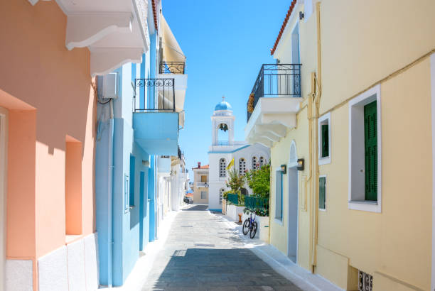
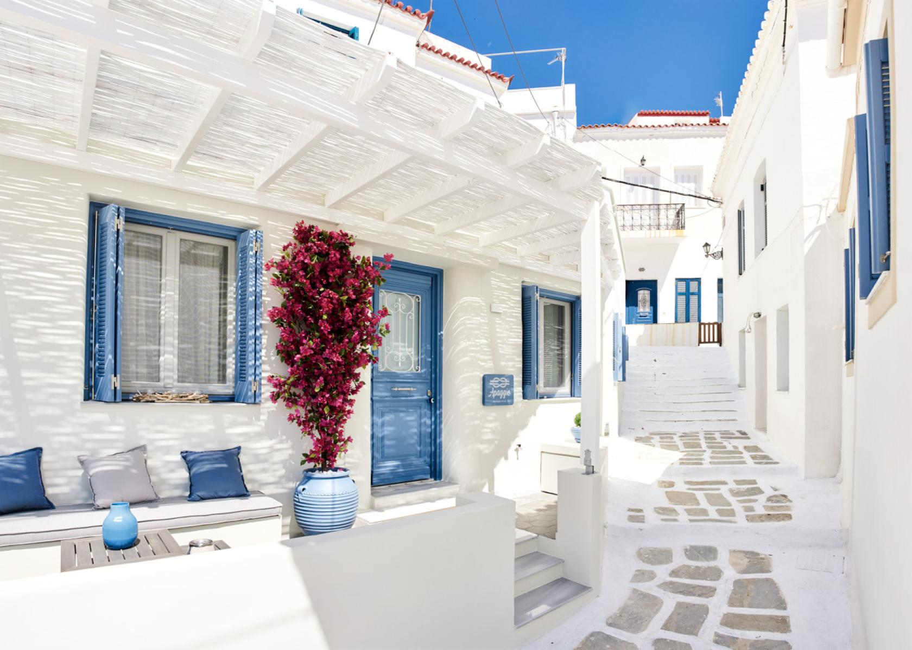

Is the architecture of Andros any different than the rest of the Cycladic islands?
Andros is a very interesting island in Greece probably because it is not a typical example of Cycladic architecture but rather a mixture of different characteristics. Typical Aegean type houses that coexist with neoclassical buildings, Venetian towers, and fortresses, towers like the Hellenistic Tower of Agios Petros, old watermills and fountains create this beautiful setting of unique harmony.
Architecture of Andros
The architecture of Andros has many aspects but it is especially known for the cosmopolitan atmosphere and the cultural identity that preserves the last decades. Around the Chora of Andros and the picturesque villages, one can see perfect examples of rural houses standing close to Venetian towers.
Equally impressive are the beautiful mansions that can be found around the island which were built during the Turkish rule painted with different colors. Another characteristic of Andros island is the many dovecotes that adorn the island and can be found mostly in Korthi region. Stone structures built in geometric shapes forming triangles, diamonds and circles give the island a beautiful tone.

Agia Thalassini

Chora - Andros

Chora - Andros
Stone structures
In the region of Korthi, traditional stone-built houses dominate the architectural landscape, offering a glimpse into the island’s rural past. These homes, often modest in size, are constructed with local stone and feature thick walls, small wooden windows, and tile roofs, designed to withstand the strong winds of the Aegean. Their earthy tones blend naturally with the surrounding terrain, creating a harmonious connection between architecture and nature. Many of these structures have been carefully preserved or restored, maintaining their authenticity while serving as a testament to the craftsmanship and self-sufficiency of past generations.

Korthi Stone structures
Here is a challenge for you
Drag and Drop the pieces to create the tower!
Overview of the island
With it's unique architecture, Andros, is truly a remarkable island that attracts tourists from all around the world.
Still don't believe us? Watch the video below to get the full expirence:
*New Information*
The Cyclades Olive Museum
The Cyclades Olive Museum is a private museum located in the mountainous village of Ano Pitrofos, very close to Menites. This museum is housed in a traditional building that was bought and restored by civil engineer Dimitris Chelmis, originating from Pitrofos and personal guide to the museum. The old oil mill that houses the museum is part of a two-floor building and occupies a large part of the ground floor (called katogi). The upper floor used to host the home of the owner. This fine example of animal-powered olive oil producing mill was very frequently met in the countryside of Andros island, operating until the 1960s.
The building of the Cyclades Olive Museum dates from earlier than 1857 and was probably operating during the 18th century. Its architectural elements, like arches and domes, are common in rural architecture of Andros and generally in the Cyclades islands. Until 1967 the oil mill stopped operating and until 1997 it was used as a storehouse. That year, the entire building (oil mill and house) was bought by its present owner, Dimitris Chelmis, and it was later restored and transformed into a museum. Visitors can get a view of the traditional oil production method in Andros and learn a lot about the local culture.
Let's see what you've learned about the Architecture of Andros!